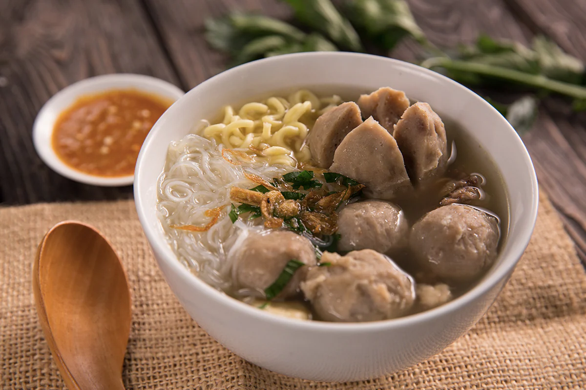

Bakso
Bahan-Bahan:
- 500 gram daging sapi, cuci bersih potong kecil2
- 12 buah es batu ukuran 2x2 cm sekitar 100 gram
- 1 buah putih telur
- 9 sdm Tepung tapiokam
- 2 sdt garam halus
- 1 sdt merica halus
- 1 sdt baking powder
- 1 sdm bawang putih bubuk (bisa pakai 4 buah di goreng dulu ya)
- 2500 ml air
Bahan kuah:
- 2000 ml air (sisa air rebusan bakso)
- 12 buah bawang putih, haluskan
- Secukupnya Gula garam dan merica
- 1 batang daun bawang, iris kecil2
- Secukupnya pakcoy rebus
- Secukupnya mie putih atau kuning rebus
- Secukupnya daun bawang, iris2
- Secukupnya saos dan kecap manis
Langkah-langkah:
- Potong daging kecil2, lalu masukkan kedalam food processor proses sampai halus, masukkan es batu sedikit demi sedikit. Masukkan putih telur proses sampai halus.
- Masukkan tepung tapioka, baking powder, bawang putih bubuk merica dan garam proses lagi sampai tercampur rata dan tekstur adonan seperti pasta
- Didihkan air sampai mendidih, matikan api kompor. Bentuk bulat2 dengan tangan(lihat di gambar) lalu dengan bantuan sendok makan masukkan adonan ke dalam air yang sudah mendidih tadi.(agar bakso tidak lengket di sendok, celup sendok di air ya).
Lakukan sampai adonan habis, Nyalakan api kompor dengan api sedang tunggu bakso mengapung. Angkat.
- Buat kuah nya. Tumis bawang putih yang sudah dihaluskan tadi sampai harum, lalu masukkan ke dalam air sisa rebusan bakso (lebih enak kuahnya dicampur dengan rebusan tulang2 ya) masukkan garam dan merica. biarkan mendidih, masukkan daun bawang.
Angkat dan siap dijadikan kuah bakso.